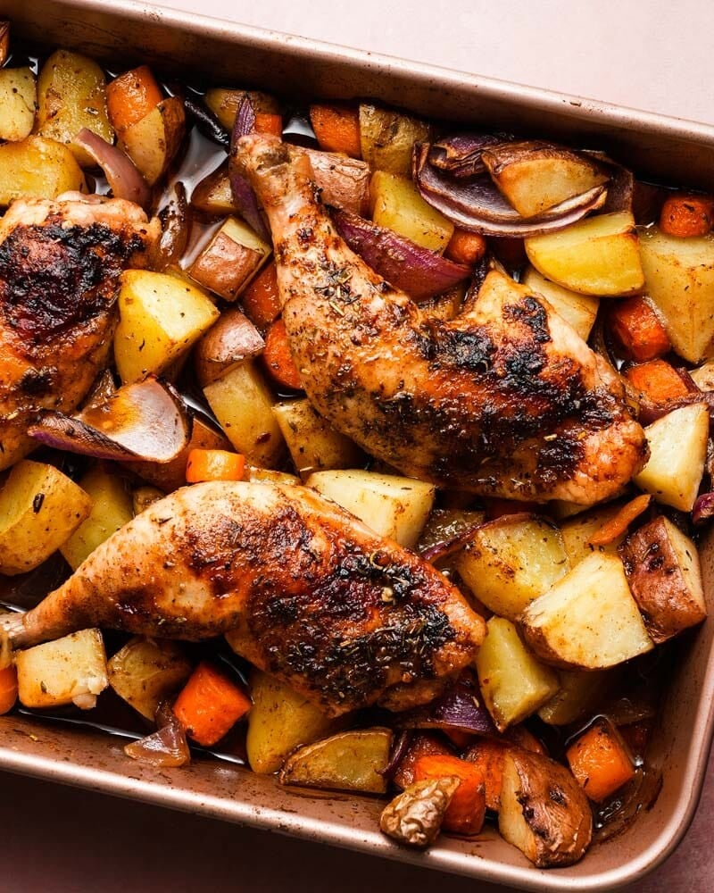

Lasagna Recipe
Description
Tender, juicy chicken baked with crispy golden potatoes and aromatic spices — an easy all-in-one dinner.
Ingridients
- 2 chicken thighs (or breasts)
- 3 potatoes, sliced
- 2 tablespoons olive oil
- 1 teaspoon paprika
- 1 teaspoon garlic powder
- Salt and pepper to taste
- Fresh herbs (optional)
Instructions
- Preheat oven to 200°C (400°F).
- Place chicken and potatoes on a baking tray.
- Drizzle with olive oil and season with paprika, garlic powder, salt, and pepper.
- Toss everything to coat evenly.
- Bake for 35–40 minutes, turning once halfway through.
- Check if the chicken is cooked through and potatoes are golden.
- Garnish with herbs and serve hot.